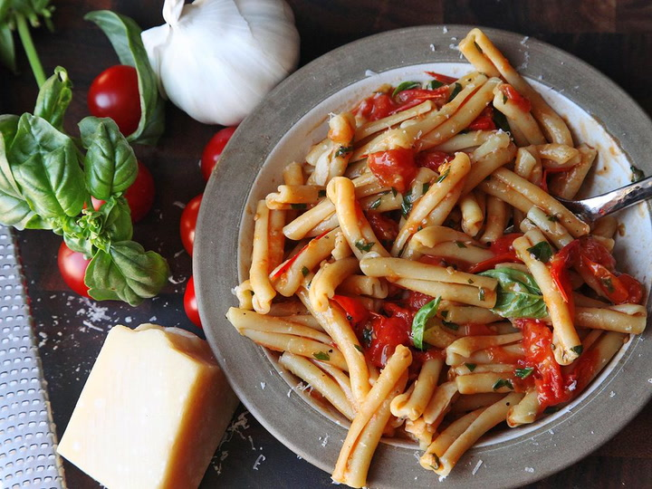

Pasta with Tomato Sauce Recipe

One of my favourite dishes simple yet delicious.
With just a handful of ingredients, you can make a delicious fresh tomato sauce for pasta in 10 minutes flat.
Ingredients
- 1 pound (450g) dry pasta
- Kosher salt
- 4 medium cloves garlic, thinly sliced
- 6 tablespoons (90ml) extra-virgin olive oil, divided
- 1 1/2 pounds cherry tomatoes (about 2 pints; 675g)
- 1 ounce fresh basil leaves, roughly chopped (about 1 cup; 30g)
- Freshly ground black pepper
- Parmesan cheese, for serving
Steps
- Place pasta in a large skillet or sauté pan and cover with water and a big pinch of salt. Bring to a boil over high heat, stirring occasionally.Boil until just shy of al dente, about 1 minute less than the package instructions recommend.
- Meanwhile, heat garlic and 4 tablespoons (60ml) olive oil in a 12-inch skillet over medium heat, stirring frequently, until garlic is softened but not browned, about 3 minutes. Add tomatoes and cook, stirring, until tomatoes begin to burst, about 10 minutes. You can help them along by pressing on them with the back of a wooden spoon as they soften.
- Continue to cook until sauce is rich and creamy, about 5 minutes longer. Stir in basil and season to taste with salt and pepper.
- When pasta is cooked, drain, reserving 1 cup (240ml) pasta water. Add pasta to sauce and increase heat to medium-high. Cook, stirring and tossing constantly and adding reserved pasta water as necessary to adjust consistency to a nice, creamy flow. Remove from heat, stir in remaining 2 tablespoons (30ml) olive oil, and grate in a generous shower of Parmesan cheese. Serve immediately, passing extra Parmesan at the table.
Return to Main Page